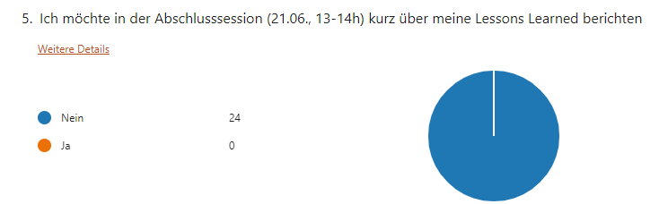
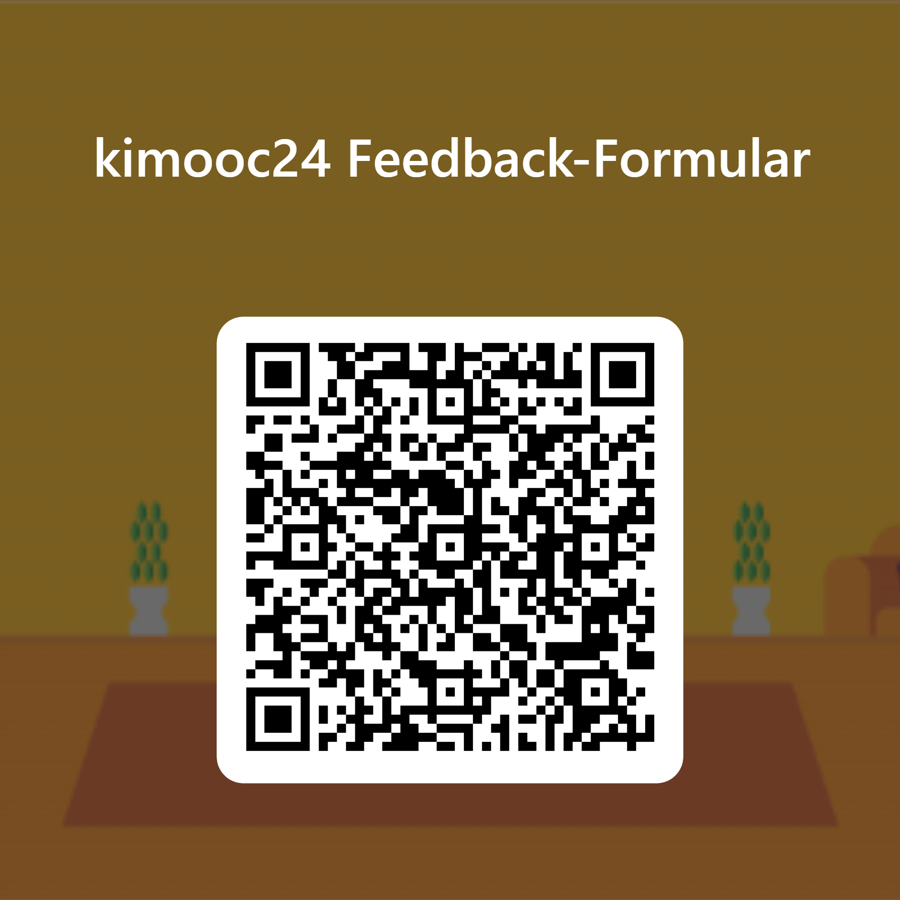
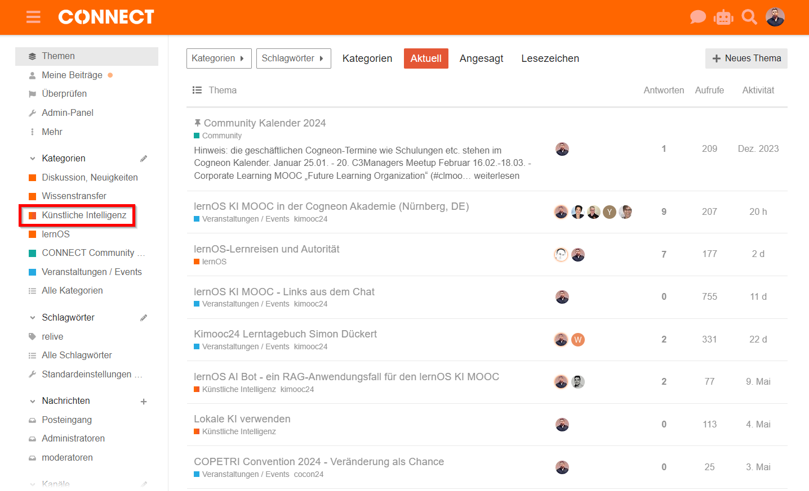

lernOS KI MOOC
06.05. - 21.06.2024
Dank an das Leitfaden Team: Benedikt, Doris, Ellen, Oliver, Hans, Marcel, Moritz, Oliver, Simon R, Stefan, Susann, Tilo, Thomas, Ute, Simon D.
Dank an die lernOS Supporter: bayernwerk, DATEV, Deutsche Telekom, LV1871, SAP, Siemens Healthineers, vitesco
🎯 Unsere Ziele
- Ihr alle lernt und vertieft den Future Skill Prompting.
- Ihr alle erstellt ein Werk mit generativer KI und veröffentlicht es zusammen mit den gemachten Erfahrungen.
- Ihr alle gebt konstruktives Feedback zum lernOS KI Leitfaden.

Bild: Katrin Mäntele (CC BY)
✅ Vorbereitung
- Tragt euch die Termine für die Livesessions in den Kalender ein (ICS-Datei), der Teams-Einwahllink steht auf meetup.com (oben rechts).
- Tragt euch in die kimooc24 Map, z.B. um Mit-Lernende zu finden!
- (Optional) Plant euch die lernOS Convention (2.-3.7.) auf der Kaiserburg Nürnberg und Online zum Erfahrungsaustausch ein.
⏰ Ablauf
- Jeden Montag von 13:00-14:00 Uhr gibt es eine Livesession (außer 20.5. & 27.5.).
- Jede Woche gibt es Grundlagen und Übungen (Katas) zu absolvieren.
- Ihr braucht etwas Zeit zum Selbststudium.
- Ihr braucht 1 Stunde Zeit zum Treffen im Learning Circle (Weekly).
Woche 1️⃣ (06.-10.05.)
- Thema: Teaming up with AI - Die ersten Schritte
- Kapitel: KI-Modelle
- Kapitel: KI-Tools & Services
- Kapitel: KI & Gesellschaft
- Kapitel: Neuronale Netze
- Katas:
- Kata 0: Vorbereiten & Kennenlernen
- Kata 1: Bewusstsein schaffen
- Kata 2: Einstieg mit der KI
📍kimooc24 Map
Woche 2️⃣ (13.-17.05.)
- Thema: KI auf dem Prüfstand - What's in it for me?
- Kapitel: KI & Maschinelles Lernen
- Kapitel: KI-Anwendungsfelder
- Kapitel: Maschinelles vs. menschliches Lernen
- Kapitel: Weiterführende Informationen
- Katas:
- Kata 3: KI als Dialogpartner
- Kata 4: Reflexion der Lernergebnisse
- Kata 5: Anwendungsfelder am eigenen Arbeitsplatz
Woche 2️⃣ (13.-17.05.)
- Problemchen aus Woche 1
- Meet the Maker 🧡: Leonid von peerfinder.app
- WOL = Observable Work + Narrating Your Work
- Habt ihr AHA-Momente, die ihr teilen möchtet? (✋)
- Anmeldung zum Hands-on KI Training mit meinGPT über Meetup möglich
- ACHTUNG: Die nächsten beiden Wochen (20. & 27.06.) sind KEINE Livesessions, erst am 03.06. wieder
Woche 3️⃣ (03.-07.06.)
- Thema: Mein erster Blog- oder Social-Media-Beitrag mit KI-Support
- Kapitel: KI & Maschinelles Lernen
- Kapitel: Prompts erstellen
- Katas:
- Kata 6: Vertiefung Deines Lernziels
- Kata 7: Zusammenarbeit mit KI
- Kata 8: Reflexion der Lernergebnisse
- Kata 9: KI als Träumer, Halluzinator oder Lügner
Woche 3️⃣ (03.-07.06.)
- Gibt es noch organisatorische Probleme? Schreibt diese gerne in den Chat
- Links aus der Livesession Woche 2 auf CONNECT
- RAGs selber bauen am Beispiel loscon24 Chatbot
- Call for Participation (CfP) für Lightning Talks (5-minütige Kurzvorträge) auf der loscon24 mit Erfahrungsberichten aus dem kimooc24 (bis Freitag 7.6. einreichen)
- 👉 Grundlagen und Katas der Woche 3 (Marcel) 👈
- Infos zum Hands-on KI Training: Konkrete Business Cases interaktiv lösen am Donnerstag 06.06. von 15:00-17:00 Uhr (Florian)
- Abschlusssession des kimooc24 am Freitag 21. Juni von 14:00-14:00 Uhr; optionale und kostenfreie Vor-Ort-Teilnahme im Rahmen des Knowledge Jam in der Cogneon Akademie in Nürnberg
Woche 4️⃣ (10.-14.06.)
- Thema: Prompting like a Pro - Prompt Engineering verstehen und anwenden
- Kapitel: Prompts erstellen
- Katas:
- Kata 10: Souverän prompten Teil 1
- Kata 11: Souverän prompten Teil 2

Woche 4️⃣ (10.-14.06.)
- Links aus der Livesession Woche 3 (inkl. Auswertung Lieblings-Tools auf CONNECT
- Call for Participation (CfP) für Lightning Talks (5-minütige Kurzvorträge) auf der loscon24 mit Erfahrungsberichten aus dem kimooc24 (bis Freitag 7.6. einreichen)
- 👉 Grundlagen und Katas der Woche 4 (Marcel) 👈
- Abschlusssession des kimooc24 am Freitag 21. Juni von 14:00-14:00 Uhr (Vergabe der kimooc24 Badges); optionale und kostenfreie Vor-Ort-Teilnahme im Rahmen des Knowledge Jam in der Cogneon Akademie in Nürnberg
Woche 5️⃣ (17.-21.06.)
- Thema: Cool down - was haben wir gelernt?
- Kata: Kata 12: Review und Lessons Learned
- Teilnahme-Badge: Wer einen Open Badge (s.a. Podcast Open Educational Badges) möchte: schreibt einen Beitrag mit Euren Lessons Learned zum lernOS KI MOOC z.B. auf Linkedin, Mastodon, in Eurem Blog etc. und tragt den Link zum Beitrag in diesem Formular ein. Dort könnt ihr zusätzlich angeben, ob ihr in der Abschlusssession am Freitag kurz über Eure Lessons Learned berichten wollt.
- Gemeinsamer Abschluss am 21.06. vor Ort in der Cogneon Akademie in Nürnberg (10:00-16:00 Uhr ➡️ Anmeldung, Anfahrt), Online (13:00-14:00 Uhr)
kimooc24 Abschlusssession

Zahlen, Daten, Fakten

Zahlen, Daten, Fakten
In Klammern: Anmeldungen/Teilnahmen
- Livesession 06.05.: 699 / 706 (No-Show-Rate: -1% 😉)
- Livesession 13.05.: 478 / 446 (No-Show-Rate: 6,7 %)
- Livesession 03.06.: 404 / 302 (No-Show-Rate: 25,2 %)
- Livesession 10.06.: 379 / 243 (No-Show-Rate: 35,9 %)
- Livesession 17.06.: 367 / 210 (No-Show-Rate: 42,8 %)
- Summe: 2.327 Teilnahmen 💪 (No-Show-Durchschnitt: 21,9 %)
Wir müssen reden ... über Kultur 😨
Stichworte: #OpenByDefault, #SharingIsCaring, #LernenDurchLehren
Bühne frei, falls doch jemand teilen mag: ☝️

Feedback
Wie geht es weiter?
Wie geht es weiter?